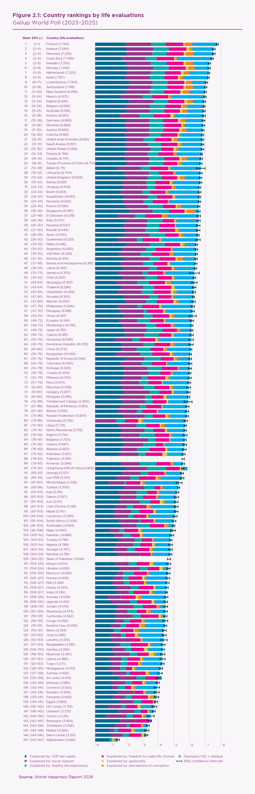

Visualization Critique and Redesign: Country Rankings by Life Evaluations
1. Original visualization and source

The figure ranks 147 countries by their average answer to the Cantril ladder question in the Gallup World Poll, averaged over 2023–2025: respondents rate their current life from 0 (worst possible) to 10 (best possible). The total length of each bar is that average, the whisker at its end is the 95% confidence interval of the mean, and the bracket next to each rank is a confidence interval for the rank itself.
Each bar is also cut into seven coloured segments. Six show how much of the country’s score a regression model attributes to GDP per capita, social support, healthy life expectancy, freedom to make life choices, generosity and perceptions of corruption. The seventh adds the score of an imaginary benchmark country, “Dystopia” (1.16), to the country’s own residual: the part of its score that the six factors do not explain.
The figure is meant to show who is happiest and least happy (Nordic countries lead; Finland and Afghanistan are more than six points apart) and to suggest what may lie behind the differences. It is read by the general public and the media, who reprint it every year as a league table, and also by researchers and policy makers. Readers use it to look up a country, to judge whether two countries really differ, to see which factors go with high life evaluations, and to compare regions.
The ranking comes from the survey answers alone. The six factors are a later explanation of the scores and are not used to compute them, which the stacked bars make easy to misunderstand.
2. Redesign
The redesign separates the two things the original stacks into one bar. On the left, each country’s score is a dot with its 95% confidence interval. On the right, one explanatory factor at a time is plotted against the score, and the selected country’s factors are drawn as separate bars from a common baseline.
Click a country (or search for it) to see which other countries it cannot be told apart from: those whose intervals overlap the shaded band stay in colour and the rest fade. Overlapping intervals are a visual guide, not a formal significance test. The “Rank range” column is computed the same way, from the published intervals, and is close to but not identical to the rank intervals printed in the original figure.
Life evaluation by country, with 95% confidence intervals
What changed and why
- Stacked bars became dots with intervals. A score is one number from a survey, so it is drawn as one position. The interval is as prominent as the dot, and the rank is shown as a range: adjacent countries in the original typically differ by about 0.02 points while the average interval is about 0.22 points wide.
- Factors moved to their own axis. In the original only the first segment starts at a common baseline, so the other factors cannot be compared across countries. Here a factor is a position on the horizontal axis of the scatter plot, which also shows how closely it goes with life evaluation.
- The residual is shown on its own. The Dystopia constant is removed, leaving a value that can be positive or negative. The original cannot draw the three countries with a negative segment (Hong Kong SAR of China, Sri Lanka, Botswana) without their bars overshooting their scores.
- Regions are groups, not colours. Countries can be grouped by World Bank region with a median line, or filtered to one region, so regions are compared by position. One colour is used for all countries; search and filtering replace scanning 147 rows.
Limitations: the full list is still long; Tajikistan and the State of Palestine each lack one factor in the source data, so they have no residual and are missing from the scatter plot for that factor; and the six factors describe association, not causes.
3. Report
The written critique and redesign report for this project is the repository’s README: Report on GitHub.
4. Data source and references
- Original visualization: Helliwell, J. F., Aknin, L. B., Huang, H., Rojas, M., Wang, S., Guerra, V., & Danyluk, A. (2026). International evidence on happiness and social media. In J. F. Helliwell, R. Layard, J. D. Sachs, J.-E. De Neve, L. B. Aknin, & S. Wang (Eds.), World Happiness Report 2026. University of Oxford: Wellbeing Research Centre. worldhappiness.report/ed/2026/international-evidence-on-happiness-and-social-media
-
Data: “Data for Figure 2.1”,
World Happiness Report 2026
(worldhappiness.report/data-sharing).
The 2025 rows (the 2023–2025 average) were exported to
data/whr26_2025.csvbyprepare_data.py, which also subtracts the Dystopia constant (1.16) from the last column to leave each country’s residual. - Regions: World Bank, World Bank Country and Lending Groups, seven-region grouping with Afghanistan and Pakistan in South Asia. Taiwan Province of China is not in the World Bank list and was placed in East Asia & Pacific by hand.
- How the ranking is built: World Happiness Report, Frequently asked questions.